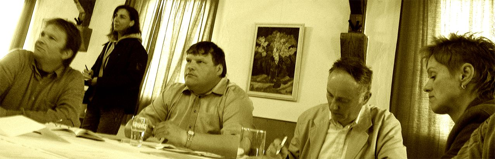

Akteure
LEADER
„ BLU-BI “ Das mobile Blumen- und Bienenklassenzimmer für Kinder und Erwachsene „ Die BIENEN und WILDPFLANZEN kommen“ In dem Projekt entsteh…
Seite lesen →
Bewohner Freunde Gäste
Herr Jetz aus Buchholz freut sich über die reiche Kürbisernte in diesem Jahr. Die fleißige Gartenarbeit zusammen mit seiner Frau wurde von d…
Seite lesen →
Politik
Wladimir Kokorlenko der erste russische Bürgerrechtler! Der 1853 in der Ukraine geborene russische Schriftsteller, der Vater Russe, die Mutt…
Seite lesen →
Gemeinde
Ohne Wille kein Weg Am 22.09.2015 war die letzte Gemeinderatsversammlung. Wie immer wurde die Sitzung sehr kurzfristig bekanntgegeben und we…
Seite lesen →
Burg Klempenow
Es ist eine Kunst, das Auto zu bremsen! „Der Weg aus den Leitplanken, zurück zur Kultur“ - unter dieser Losung stand der erste Schritt an di…
Seite lesen →
Rede von Bürgermeister Ernst Wellmer zur Eröffnung des Friedensfestes am 08. Mai 2012 in der Hansestadt Demmin
Meine sehr verehrten Damen und Herren, liebe Demminerinnen und Demminer, verehrte Gäste aus Nah und Fern,
LEADER
„ BLU-BI “ Das mobile Blumen- und Bienenklassenzimmer für Kinder und Erwachsene „ Die BIENEN und WILDPFLANZEN kommen“ In dem Projekt entsteh…
Seite lesen →Bewohner Freunde Gäste
Herr Jetz aus Buchholz freut sich über die reiche Kürbisernte in diesem Jahr. Die fleißige Gartenarbeit zusammen mit seiner Frau wurde von d…
Seite lesen →Politik
Wladimir Kokorlenko der erste russische Bürgerrechtler! Der 1853 in der Ukraine geborene russische Schriftsteller, der Vater Russe, die Mutt…
Seite lesen →Gemeinde
Ohne Wille kein Weg Am 22.09.2015 war die letzte Gemeinderatsversammlung. Wie immer wurde die Sitzung sehr kurzfristig bekanntgegeben und we…
Seite lesen →Burg Klempenow
Es ist eine Kunst, das Auto zu bremsen! „Der Weg aus den Leitplanken, zurück zur Kultur“ - unter dieser Losung stand der erste Schritt an di…
Seite lesen →heute vor 67 Jahren, am 08. Mai 1945, endete der schrecklichste Krieg der Menschheit auf deutschem Boden. Der Zweite Weltkrieg war der bislang größte und verheerendste Konflikt der Menschheitsgeschichte. Er forderte zwischen 55 bis 60 Millionen Menschenleben.
Krieg offenbart, wozu der Mensch in seinen Abgründen fähig ist. Krieg ist die Kapitulation vor der Macht des Bösen. Er zeigt, dass Menschen am Ende sind mit jeder Form von Menschlichkeit und zu der sinnlosesten Form der Auseinandersetzung greifen. Krieg kann niemals „gerecht“ sein. Millionen von Toten, Millionen Mal ein Mensch – unfassbar für das Maß der Vorstellung – und millionenfache und Generationen übergreifende Folgen in den Herzen und Köpfen der Menschen müssen uns jeden Tag neu einschärfen: Nie wieder Krieg! Seit 2002 ist der 08. Mai in MecklenburgVorpommern ein staatlicher Gedenktag als Tag der Befreiung vom Nationalsozialismus und der Beendigung des Zweiten Weltkrieges.
Dieser Tag soll uns mahnen, dass wir wach sein sollen gegen jegliche Gewalt, die die Vergangenheit verdreht, die Dunkelheit und Schuldigkeit leugnet und meint, damit Zukunft bauen zu können. Wer die Vergangenheit nicht kennt und anerkennt, den kann es die Zukunft kosten.
Zum wiederholten Male musste auch in diesem Jahr ein Marsch der ewig Gestrigen durch unsere Hansestadt Demmin vom Landkreis genehmigt werden. Diese Menschen, die heute Abend dort mitmarschieren werden, haben aus der Vergangenheit keinerlei Lehren gezogen.
Wie gefährlich der Rechtsextremismus ist, hat die Aufdeckung der Taten der rechtsextremistischen Zwickauer Terrorzelle im vergangenen Jahr gezeigt.
Ich bin überzeugt: Wir alle unterstützen ein erneutes NPD-Verbotsverfahren. Es kann nicht sein, dass die Anhänger von Intoleranz, Menschenverachtung und Gewalt auch noch mit Steuergeldern in Millionenhöhe unterstützt werden.
Um dafür ein deutliches Zeichen zu setzen, findet am heutigen Tag hier am Hanseufer und an vielen anderen Plätzen in unserer Stadt ein Friedensfest unter dem Motto „Demmin bleibt bunt“ statt. Ein Aktionsbündnis 08. Mai, die Hansestadt Demmin und der Landkreis Mecklenburgische Seenplatte haben dazu aufgerufen.
Für die Vorbereitung und Durchführung möchte ich mich bei allen Akteuren recht herzlich bedanken.
Gedenken wir gemeinsam der Millionen Toten des Zweiten Weltkrieges in aller Welt und Hunderter Opfer hier bei uns in Demmin.
Und wirken wir gemeinsam für den Frieden!
8. Mai 2006: Gemeindevertreter Tellins wollen Ferkelfabrik...

Tollensetaler Stimme 2012 Sonderausgabe, S.2
Ein wunderbarer Film über Absurdistan, den sich alle Freunde des Tollensetals anschauen sollten: